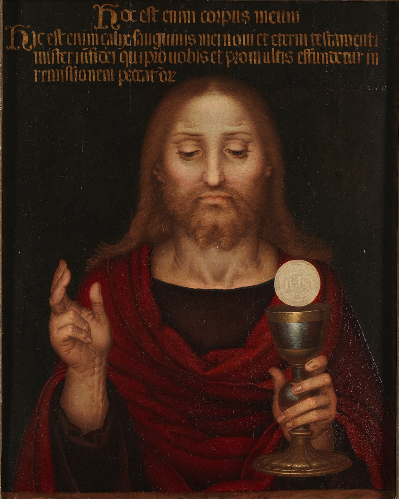
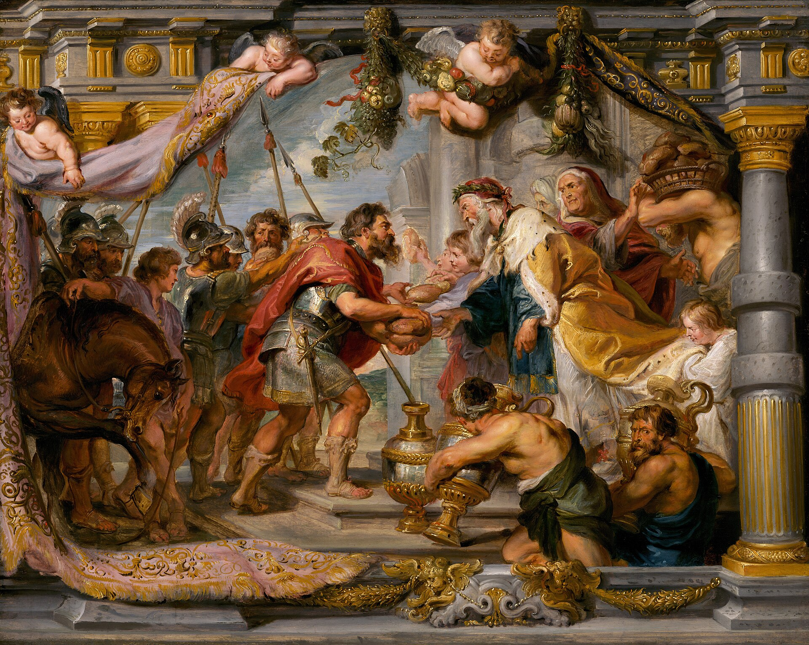
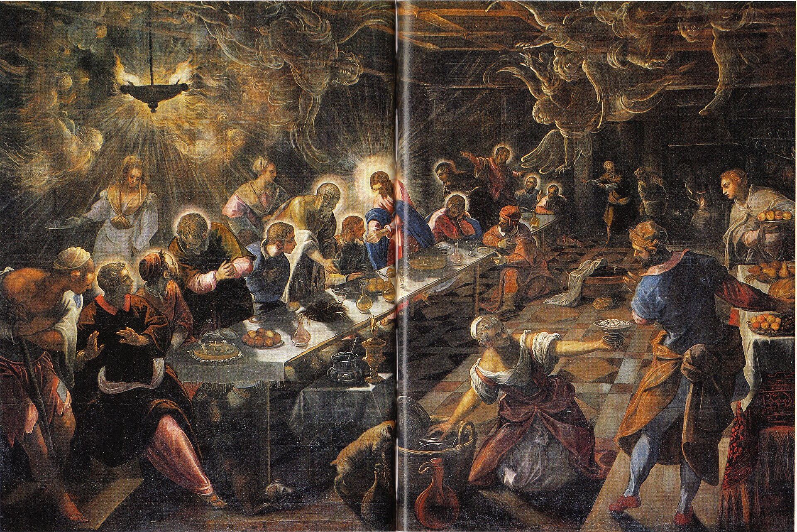
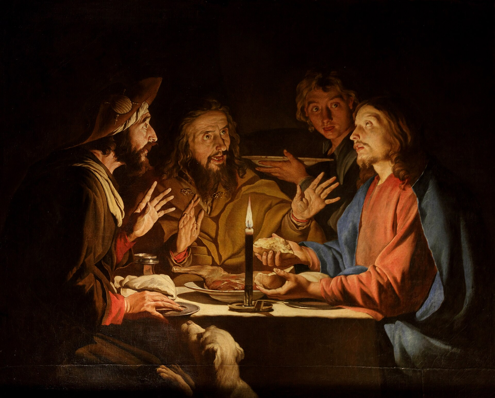
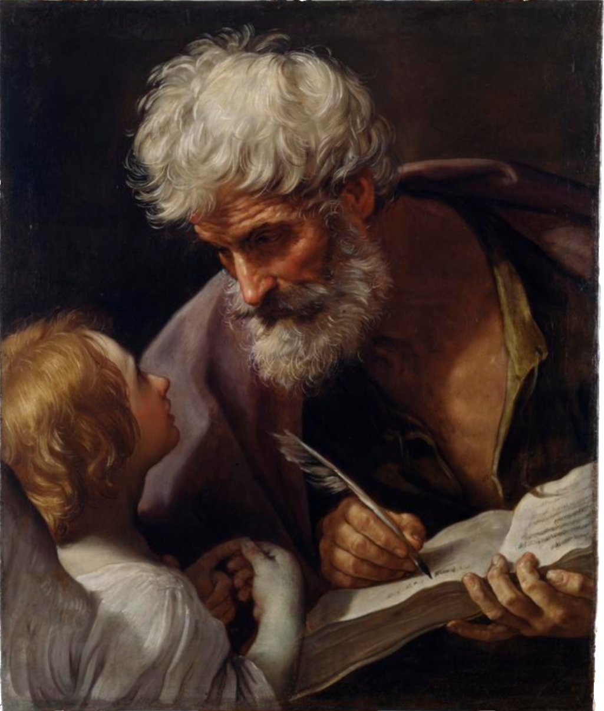
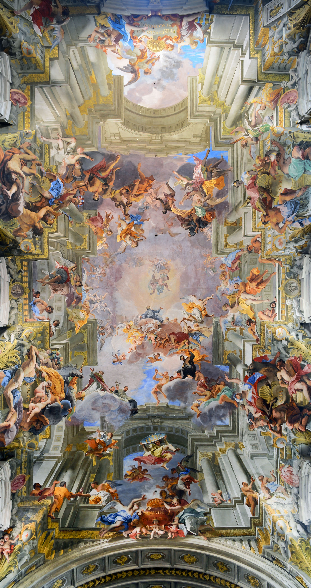
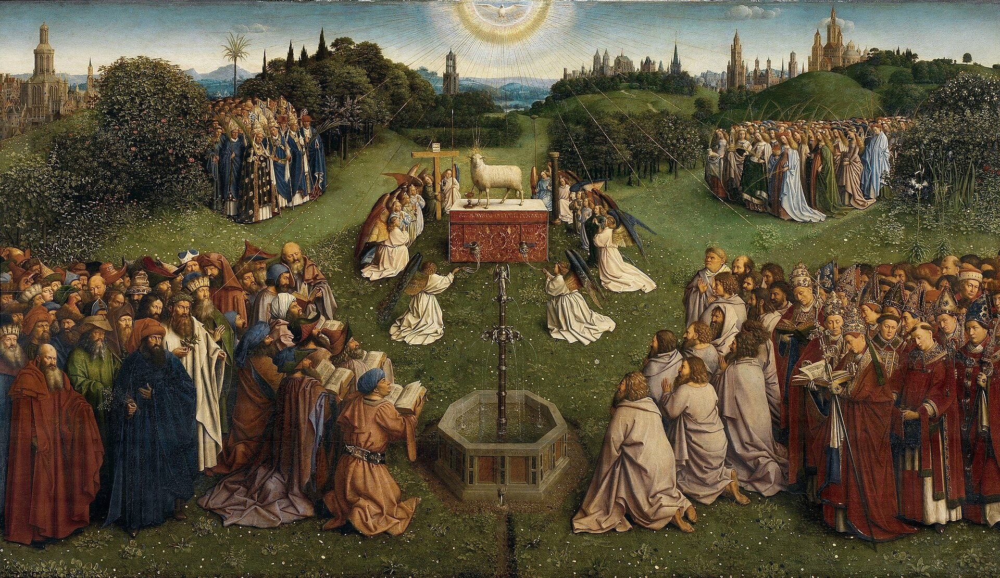
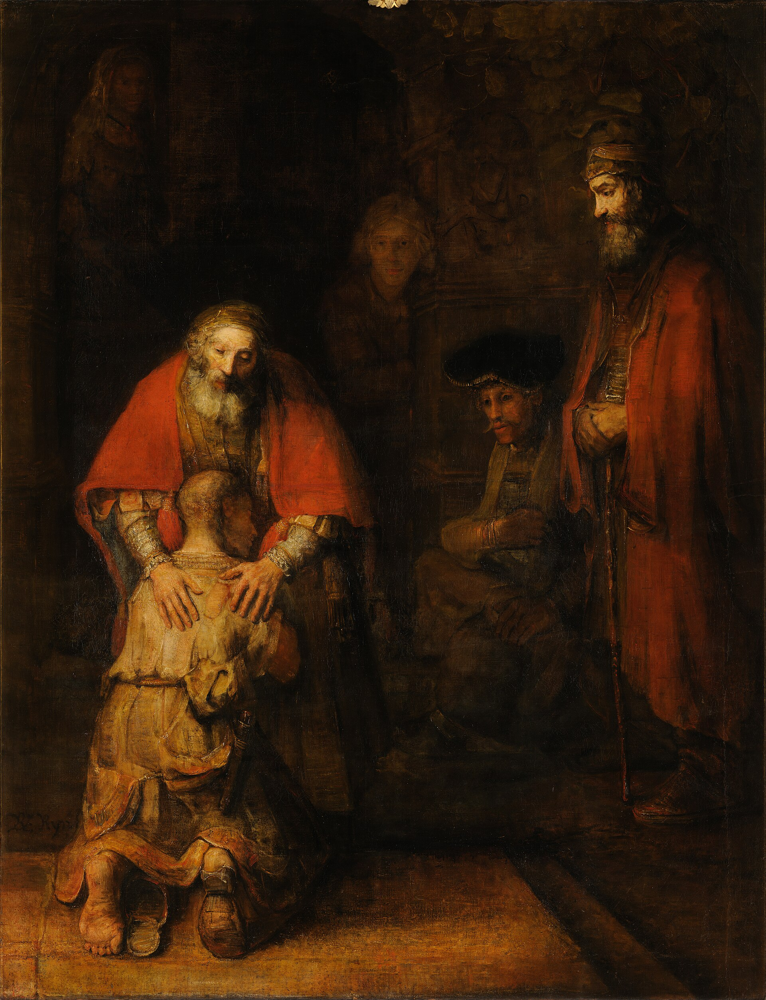
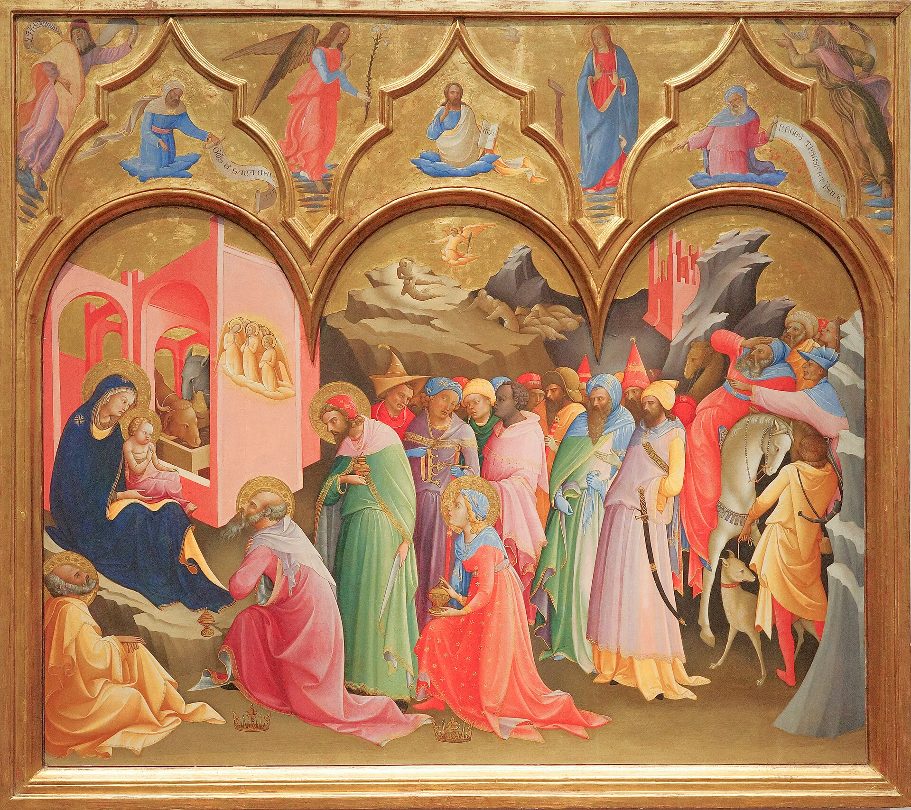

麥基洗德獻上餅和酒（創14）——聖體聖事的預像
這血在你們所住的房屋上，當作你們的記號：我打擊埃及國的時候，一見這血，就越過你們去，毀滅的災禍不落在你們身上。這一天將是你們的紀念日，要當作上主的節日來慶祝；你們要世世代代過這節日，作為永遠的法規。——出 12:13–14

基督在畫面中央分餅，光照全場
他們正吃晚餐的時候，耶穌拿起餅來，祝福了，擘開遞給門徒說：「你們拿去吃罷！這是我的身體。」然後，又拿起杯來，祝謝了，遞給他們說：「你們都由其中喝罷！因為這是我的血，新約的血，為大眾傾流，以赦免罪過。我告訴你們：從今以後，我不再喝這葡萄汁了，直到在我父的國裏那一天，與你們同喝新酒。」——瑪 26:26–29・另見谷14・路22・格前11
從此，他的門徒中有許多人退去了，不再同他往來。於是耶穌向那十二人說：「難道你們也願走嗎？」西滿伯多祿回答說：「主！惟你有永生的話，我們去投奔誰呢？我們相信，而且已知道你是天主的聖者。」——若 6:66–69

燭光下耶穌擘餅，門徒驚悟

天使引著聖史的手寫福音——天主說話的樣子

抬頭仰望，藍天之上基督在光中，聖人天使層層環繞——正是「天上觸及人間」的樣子

祭台上的羔羊，血流入聖爵，聖人環繞欽崇——「天主的羔羊」

父親擁抱跪著的兒子——告解就是回家

賢士俯伏朝拜聖嬰——朝拜的樣子
「因為餅只是一個，我們雖多，只是一個身體，因為我們眾人都共享這一個餅。」